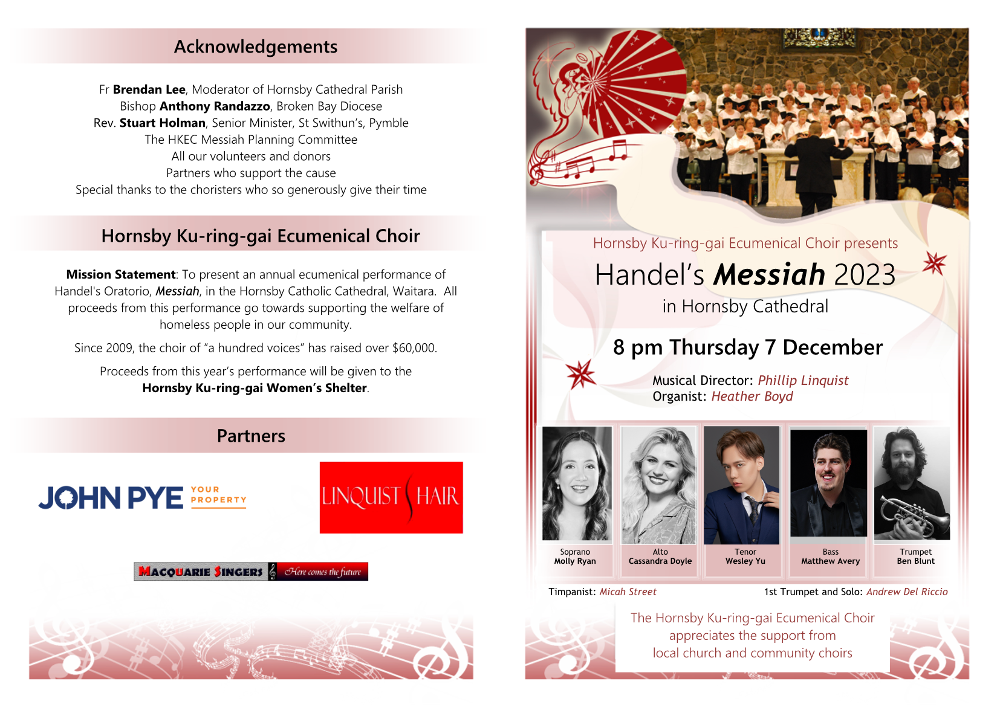
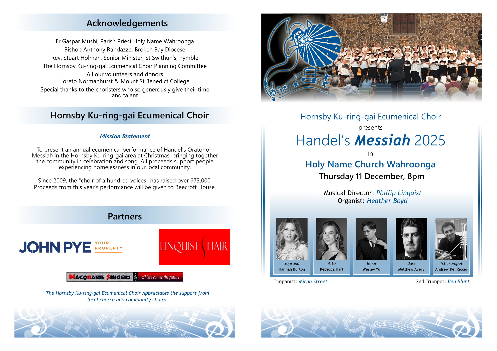
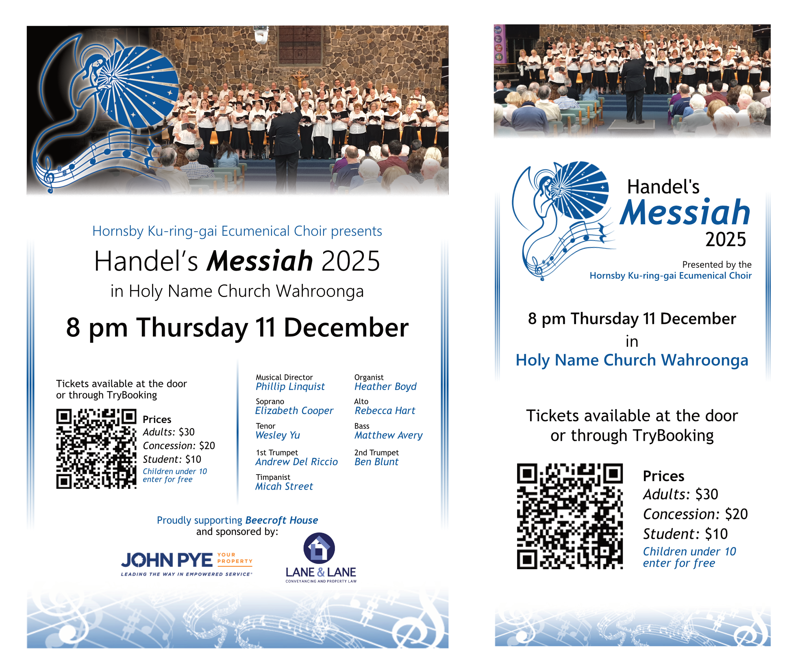
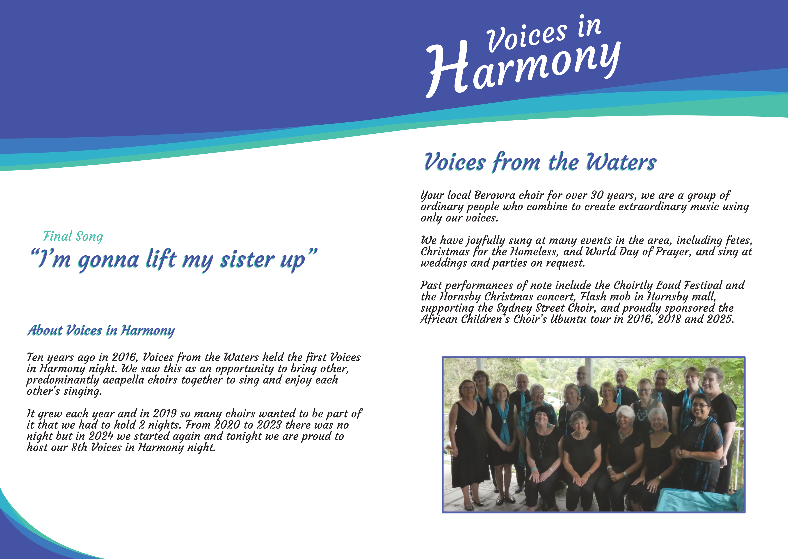

HANDEL'S MESSIAH
PROGRAMME
The Hornsby Ku-ring-gai Ecumenical Choir's performance of Handel's Messiah is a yearly charity event currently held at the Holy Name Church in Wahroonga, with the aim of raising money to fight homelessness in the local area. Since 2009, the event has raised over $73,000.
In the years leading up to 2025, I volunteered to create the inserts for the performance's programme, which gave more details about the soloists and musicians performing, and in 2025 I was asked to recreate the event's programme so that it could be more easily modified in the future. In the process of recreating the programme, I was tasked with creating two versions, one featuring the red colouring of the older programme, and one blue, which the event decided to use. The newer version is distinct in a few key areas, particularly the clearer and more readable front page, but the main goal of this project was to have an updated version of the document that could be more easily modified in the future, a goal that was without a doubt achieved. Below are the original programme, used until 2024, and the recreation I created, used in 2025 and 2026.


LOGO
Alongside the new programme, I created a new logo that could be used across the event's various advertising materials. Using the original logo as a base, I aimed to simplify its shape while maintaining its established identity. I also sought to build on its ties to the event itself, replacing the musical notes featured with those from the first bar of Handel's "Hallelujah", one of the most well known songs included in the performance. Below are the old and new logos side by side.


FLYERS
The logo, as well as various other materials created for the programme, were also used in a collection of flyers used to advertise the event. Below are two such flyers, one A3 and the other DL sized.

VOICES IN HARMONY
ADVERTISING MATERIAL
Since 2019, I've created various works for Voices in Harmony, a yearly a capella event at Club Berowra hosted by Voices from the Waters, a local choir. Below are a few pieces of advertising material from 2024's event, as well as an ad shown on the club's website in the lead up to the 2025 event. The colours and theming were inspired by Voices from the Waters' own, using colours and shapes reminiscent of flowing water to cement a solid theme that could be used across all the event's materials.

PROGRAMME
In addition to advertising material, I also created the event's programme, printed on a single double sided piece of A4 paper. The event's programme from 2026 is shown below.


OTHER MATERIAL
Finally, I also designed stands for each choir's table, and wine labels featuring the choir's name and the year of the event to be presented to each as thanks for their participation. In cases where choirs participated in multiple years, care was taken so each label was visually distinct from the one before it.

RETURN TO MAIN PAGE
Daniel Mooney's Portfolio, last updated October 2026
Contact at danielpaulmooney@gmail.com